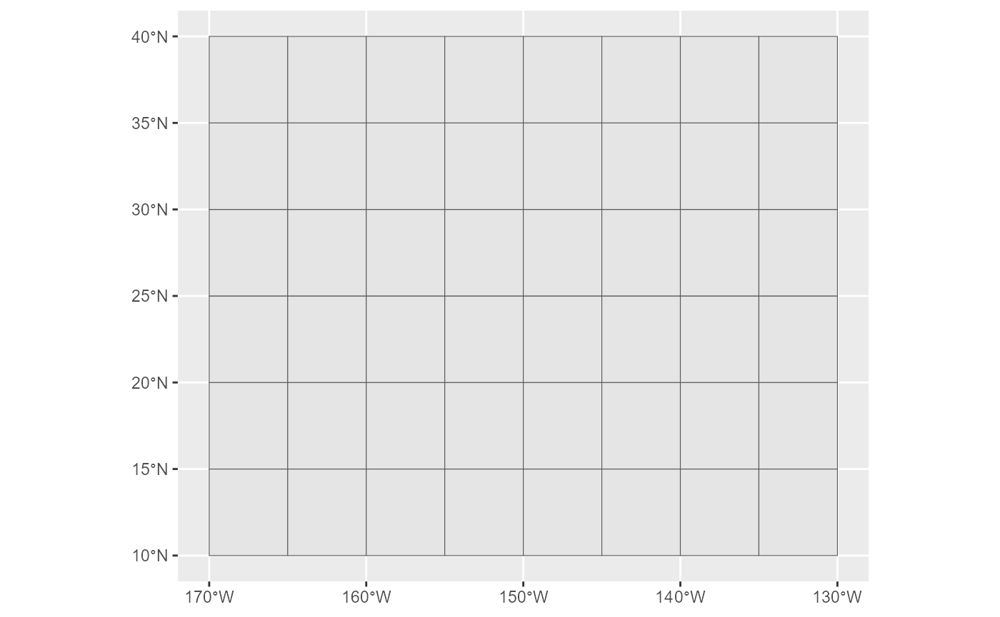
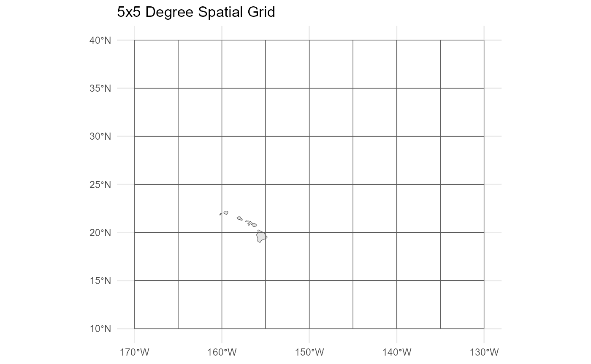

Making a spatial grid file
Paul Carvalho
2026-09-04
Source:vignettes/making_a_spatial_grid.Rmd
making_a_spatial_grid.RmdLoad packages
## Warning: package 'sf' was built under R version 4.5.3## Linking to GEOS 3.14.1, GDAL 3.12.1, PROJ 9.7.1; sf_use_s2() is TRUE## Warning: package 'ggplot2' was built under R version 4.5.3Create a spatial grid
# Define the bounding box of the grid
# latitude: 10 to 40 degrees N
# longitude: -170 to -130 degrees W
bbox <- c(xmin = -170, xmax = -130, ymin = 10, ymax = 40)
# Define the size of each grid cell
# 5 degree x 5 degree grid
cell_size <- c(x = 5, y = 5)
# Create the grid
grid_sf <- st_make_grid(
st_as_sfc(st_bbox(bbox)), # Bounding box for the grid
cellsize = cell_size, # Size of each cell
what = "polygons" # Grid cells as polygons
)
# Convert to an sf object
grid_sf <- st_sf(geometry = grid_sf, crs = 4326)If you have a spatial data table loaded as a dataframe, use the st_as_sf() function from the sf package to convert the dataframe to an sf object.
Add zone ID variable to the spatial object
# Assign zone ID variable
# Here the ID is just a sequence from 1 to the total number of grids in the spatial object
grid_sf$zoneID <- seq(1:length(grid_sf$geometry))IMPORTANT NOTE: if a zone ID variable already exists in the primary data table, this will need to be reassigned based on the zone ID assigned here for the spatial object. See last section of this vignette on reassigning the zone ID in the primary data table.
Plot

# Add a world map layer to the plot
base_map <- ggplot2::map_data("world",
xlim = c(bbox["xmin"], bbox["xmax"]),
ylim = c(bbox["ymin"], bbox["ymax"]))
base_map <- FishSET::dat_to_sf(base_map, lon = "long", lat = "lat", id = "group",
cast = "POLYGON", multi = TRUE, crs = 4326)
ggplot() +
geom_sf(data = base_map) +
geom_sf(data = grid_sf, fill=NA) +
theme_minimal() +
labs(title = "5x5 Degree Spatial Grid")
Save spatial grid
# Uncomment the code below to save the spatial grid as an RDS file to be used in FishSET
# Note: the second input should include the filepath and filename to be saved. See help documentation for saveRDS().
# saveRDS(grid_sf, "fiveByFiveGrid.rds")Reassign zone ID in primary data
The zone ID variable in the primary data table can be reassigned to match the zone IDs in the spatial grid object based on the lat/lon of fishing location in the primary data table.
Use the assignment_column()
function in FishSET to reassign zone IDs in the primary data table.
If using the FishSET GUI: navigate to the Select variables tab, use the Create zone ID column button, and follow the directions to reassign zone IDs in the primary data table.